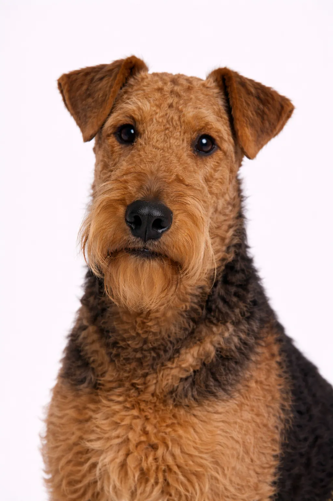

梗犬组
大型
万能梗
凭借其自信、勇敢的 性格而受喜爱, 万能梗 是受欢迎的犬种有其原因.
起源
英国
寿命
11-14 年
身高
56-61 cm
22-24 in
22-24 in
体重
20-30 kg
44-66 lbs
44-66 lbs
品种评分
活力水平4/5
美容需求3/5
可训练性4/5
适合儿童4/5
适合公寓2/5
吠叫程度3/5
性格
自信勇敢的友好聪明外向
概述
万能梗是体型最大的梗犬品种，以其体型和多用途性赢得了“梗犬之王”的美誉。
性格
艾尔谷梗自信、聪明、多才多艺，是优秀的工作犬。它们与孩子相处融洽，是忠诚的家庭守护者。梗犬的坚韧天性与可训练性的结合，使其赢得了“梗犬之王”的美誉。
健康
总体强健，寿命11-14年。需注意髋关节发育不良、过敏症和甲状腺功能减退症。某些血系易患胃扭转（腹胀）。定期美容有助于早期发现皮肤问题。
运动
精力旺盛，需要每天进行高强度运动——至少一小时的活动。擅长游泳、徒步和犬类运动。精神刺激同样重要；有任务可做时表现最佳。运动不足可能导致破坏性行为。
⦿ 这个品种适合您吗？
✓ 最适合
- 活跃的家庭
- 希望拥有多用途犬的人
- 有院子的家庭
- 有经验的养狗者
✗ 不太适合
- 公寓居民
- 生活方式较为静态的家庭
- 多犬家庭（可能有攻击性）
- 首次养狗者
我们的评价: 梗犬之王——多才多艺、聪明自信。艾尔谷梗是优秀的家庭犬，但需要充足运动和有经验的主人管理。